PROCESS
Empathize
User interviews and conversation with the Kawa owners
Define
Problem statement, competitive analyses
Ideate
Brainstorming, sitemap, wireframing
Protoype
Low-fidelity and high-fidelity prototype
Test
Usabillity test

Can technology help improve a business model by creating a better experience of their customer for local Japanese restaurant?
Being born from a family who owns their own Chinese-American restaurant, I've developed connections in the food industry, including with the owners of Kawa, a local Japanese restaurant in Allison Park, Pennsylvania. Through community involvement, I assisted in their launch and proposed designing a potential app for them as I embark on my UX journey and pursue Google Certification.
Kawa, established in 2021 by a dedicated Chinese couple, specializes in sushi and hibachi cuisine, offering pickup, dine-in, and delivery options through partnerships with leading platforms like UberEats, DoorDash, and Grubhub. Committed to innovation, Kawa aims to expand its customer base and enhance its offerings.
User interviews and conversation with the Kawa owners
Problem statement, competitive analyses
Brainstorming, sitemap, wireframing
Low-fidelity and high-fidelity prototype
Usabillity test
Here are the hurdles that I encountered while working on this project
As a newly established family business, prioritizing digital assets such as images, icons, and branding materials isn't their primary focus at the moment.
Some staff at Kawa face challenges with understanding technology due to cultural barriers, resulting in limited experience in this area.
Kawa caters to a diverse range of customers, primarily locals. However, due to their broad appeal, pinpointing a specific demographic is challenging.
1-to-1 talk with well-connected customers about questions their experiences, and how it can be improved.
Completing a competitive audit to learn about successful restaurants in the area through their website/app.
Evaluate the ease of use, efficiency, and satisfaction of the app. The first one was done after the wireframes, and the other one is after the lo-fi-prototype.
Based on the user interviews, I made two personas that aligns with the business goals and consumer needs.
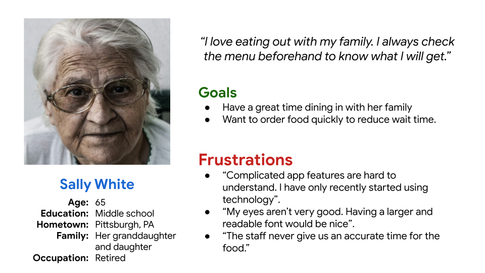
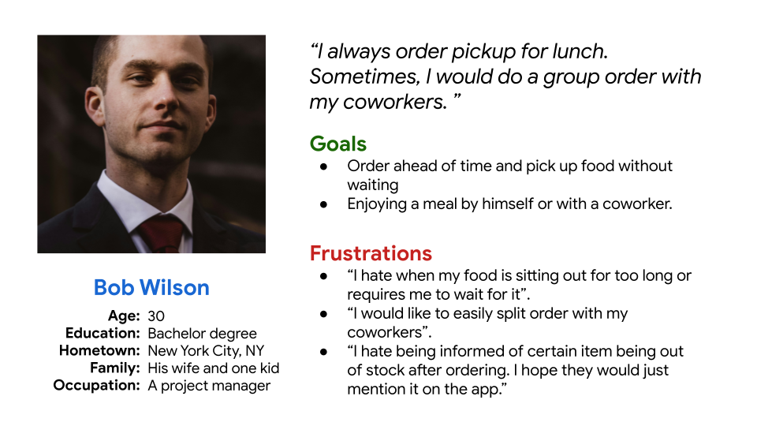
The hierarchical arrangement of the pages to determine the steps and structures of the overall design. I found it helpful when designing, especially when I have a hard time visualizing the navigation. The process was done in Miro.
Simple layout of the frames, mainly to the main functionality of each screen. Doing it on whiteboard makes fixing and adding very efficient and cheap. Once I determined which wireframes to settle with, I recopied it on paper to do a usability test with a user that I scheduled a head of time.
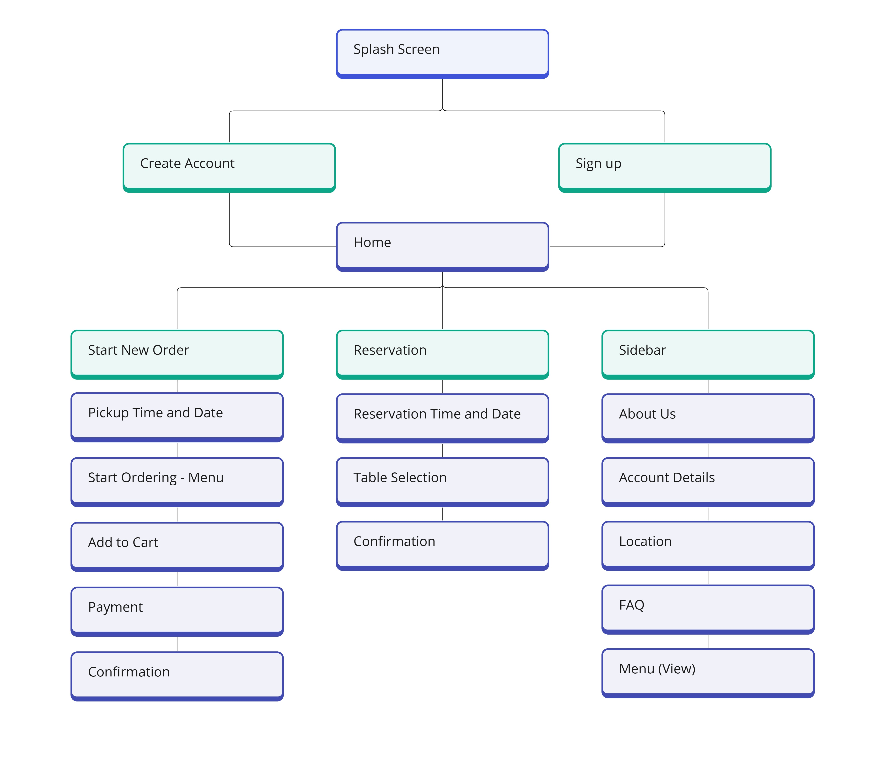
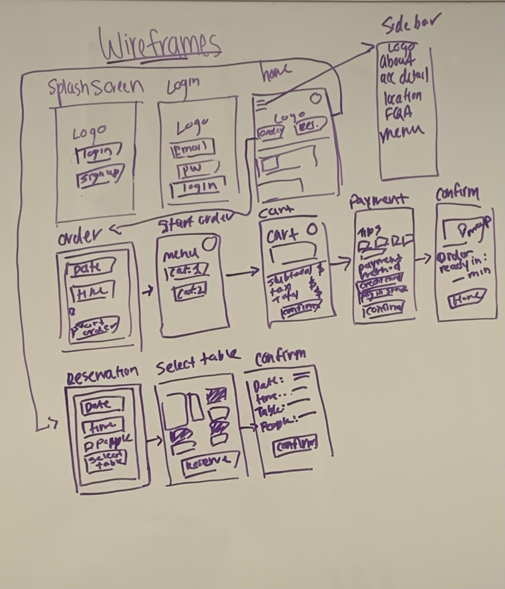
After finalizing the wireframes and conducting user testing, I developed low-fidelity prototypes using Figma. During the testing phase with wireframes, users encountered issues navigating the app, such as:
- Unclear labels/icons (e.g. no labels on back arrows)
- Hesitations during ordering
- Functionality gaps
These concerns were successfully addressed in the low-fidelity prototypes. Here are some example frames:
The color palette chosen closely reflects the branding of Kawa, ensuring a harmonious and consistent visual identity across the design.

I used Roboto for the app font due to its sleek and modern looks.
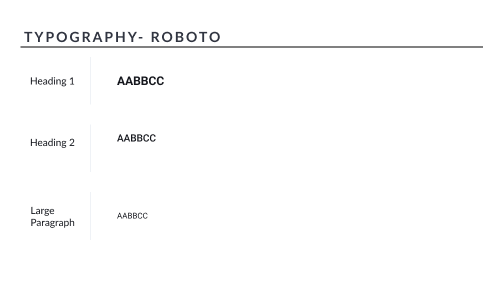
Elements that are consistently used throughout the app.

I used stock images and creative commons in the project, but I also taken personal pictures by eating at the restaurant with permission. Being a consumer, myself helps me see things through the lenses of a user.
Users can either sign up or sign in with their existing account. The email used for the username will allow customers to receive order receipts and get reservation tickets.
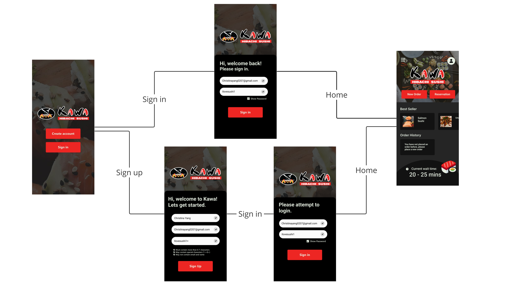
Reservation will include the selected date, reservation time, and the number of guests. Users will allow to pick their own seats by selecting areas that are not occupied and is able to seat the number of guests (white tables). Once the table is selected, it will be highlighted in red and spelled out by the label "selected areas". Lastly, a confirmation page will pop up, allowing them to double check and deciding if they want to receive an email ticket of their reservation. Once confirm, the information will be sent to Kawa's POS system.
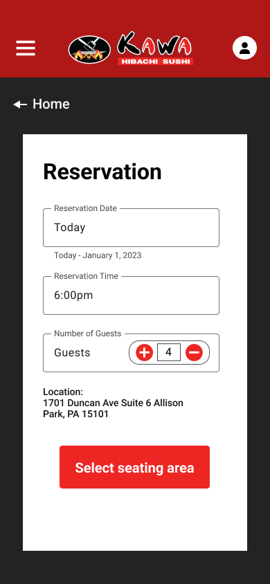
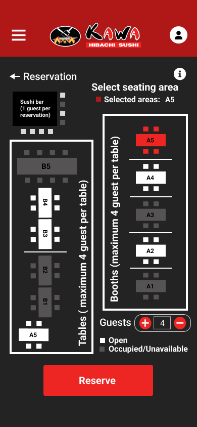
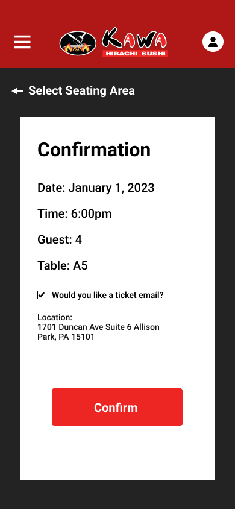
The process first starts with selecting a pickup time and date, as well as asking if they want an email receipt. After, they're able to add items to the cart through an ordering menu. Once the user is done with the order, they can click on the cart button to pay. In the payment page, user can add optional tips and their desired payment method. Kawa allows prepaid or online payment for their current pickup system, hence that's reflected in the design. User can also save their credit or debit card information for future orders. After clicking confirm, a "thank you" screen will pop up with their order number. Even if the user didn't click for an email receipt, there will be a copy automatically stored in their account.
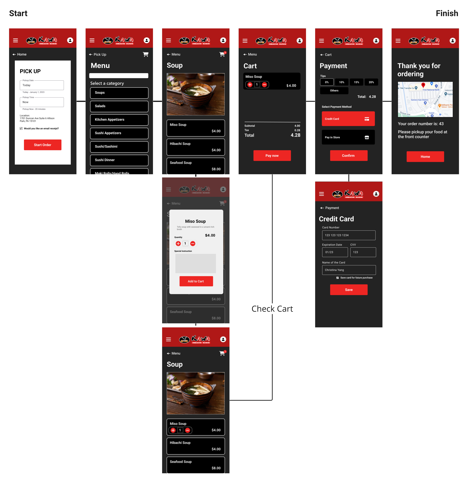
The components of selecting time and date similar for both reservation and pickup. User can either select today's date, or toggle to "Later" to pick a date on the calender. Similarly, users can select their own time by hours and minutes using the buttons or manually scroll through.

Although Kawa decided to not move forward with the app development, the experience I received throughout the process has proven valuable and allows me to transfer the skills to future projects.
I realized the importance of connecting with clients throughout the process, even if it's asking them a simple question or learn more about their business goals.
As it was my first time doing an UX project, I was able to familiarize and practice using popular industry software such as Figma and Adobe Creative Clouds.
I learned that the design process isn't as straightforward as it seems on paper. For instance, there are times that I have to go back to the beginning from the planning steps to fully understand the user's intentions. Due to time difficulty, user interview is done towards the prototyping stage. It encourages me to be flexible and open-minded.
I have encountered facing unexpected hurdles throughout the beginning to end, ranging from reaching out to users to needing to find resources to do the UI design. Although it causes some delays with the end product, I have learned through my mistakes and achieve a more satisfying result.
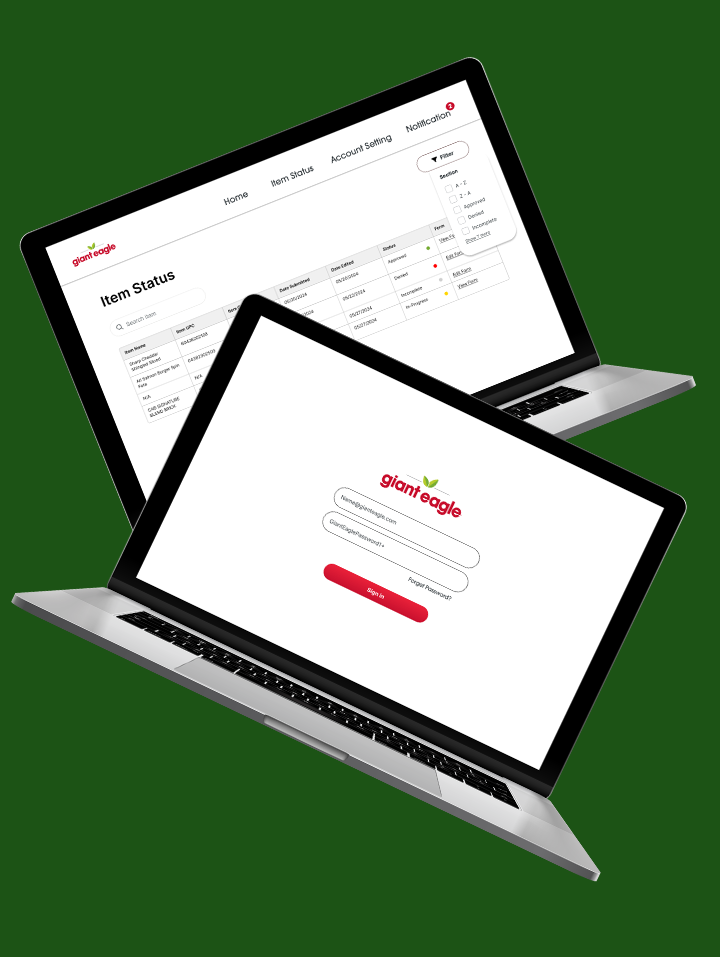
UX Research | UX Design | UI Design | Development
Completed a micro-internship by proposing an item portal design for vendors at Giant Eagle.
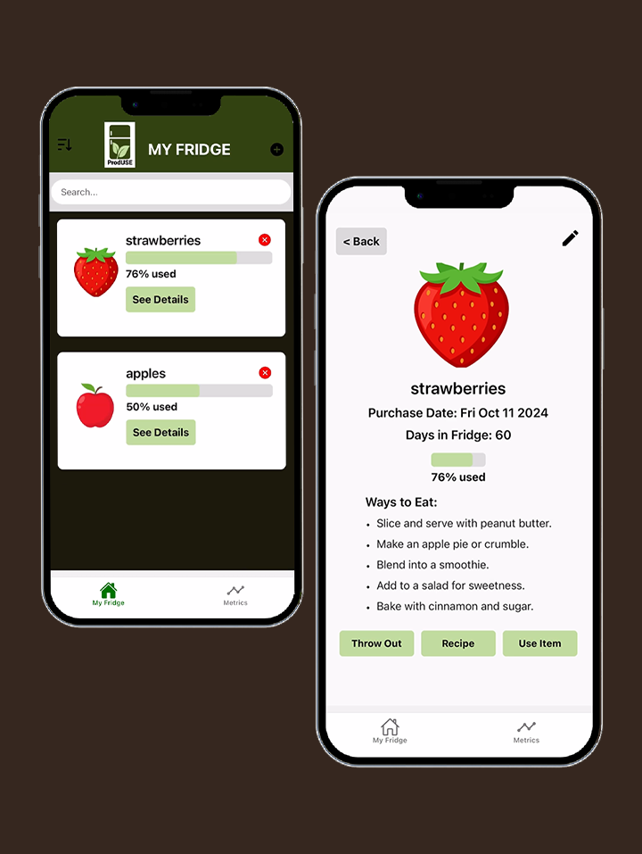
UX Research | UX Design | UI Design | Development
Develop a grocery catalog app aimed at addressing food waste and optimizing financial resources.